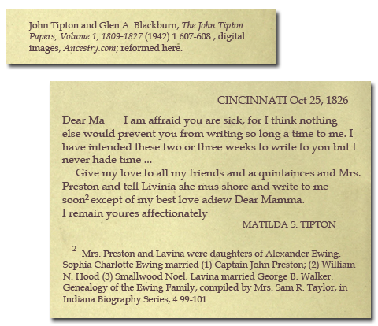

Taylor and the Tipton Papers
(a) Initial Reference in The John Tipton Papers ...
For many years, the only record suggesting Sophia Ewing, wife and widow of John Preston (d. 1819), was the daughter of Alexander [and Charlotte (Griffiths)] Ewing was was notice in a published letter and related
footnote in the source, John Tipton and Glenn A. Blackburn,
The John Tipton Papers, Volume 1 1809-1827 (1942) 1: 607-608.
The footnote read, "Mrs. Preston and Lavina were daughters of Alexander Ewing. Sophia Charlotte Ewing married (1) Captain John Preston; (2) William N. Hood; (3) Smallwood Noel. Lavina married ... Genealogy of the
Ewing Family, compiled by Mrs. Sam R. Taylor in Indiana Biography Series, 4:99-101."
If you subscribe to Ancestry.com, you can view the page by searching "Sophia Ewing"; this item will return in "Stories & Publications." My transcription of the letter and the footnote appear in the graphic below:

(b) "Genealogy of the Ewing Family"
Over many years, I made unsuccessful searches for Mrs. Sam R. Taylor's compilation, "Genealogy of the Ewing Family." A couple years ago, an Indiana state archivist took the search on as a mission. What he found was provided with a cover letter stating, "...information concerning the Ewing family from the Indiana Biography Series v. 14 pp. 99-101" (note the different volume number). The materials I received were image copies of from film (3 pages each from positive and negative film) of what I would otherwise describe as a manuscript titled, "Genealogy of the Ewing Family." Mostly typed, the document did include a few handwitten notations; it was signed Isabella H. Taylor and dated 22 Nov 1929, Fort Wayne.
I created a citation for the manuscript copies I'd received, in part as below:
Isabella H. Taylor (Fort Wayne, Indiana), "Genealogy of the Ewing Family," 22 Nov 1929, 3 pp.; image copies from film ...; referenced as "Indiana Biography Series 14: 99-101"; Indiana State Library, Indianapolis, Indiana ... "
(c) Identifying Isabella/Isabelle aka Mrs. Sam R. Taylor
With the assistance of Colleen Method, a genealogy friend and blogger from Indiana, I located a good reference showing Mrs. Samuel R. Taylor was Isabelle Houghton Taylor [possibly changed from Isabella Houghton Taylor].
http://web.isl.lib.in.us/INBiopre1990/bio_cards_display.asp?IDNum=121131
Other research about Taylor provided insight into why/how she might have written some of the details contained in the manuscript.
Comments
I have all these notations in my file. I feel confident the image copies from Indiana is the work referred to in
The John Tipton Papers, but as you probably see, there are a different ways that reference might be reported in my file. You just don't know what tiny nuance might make a difference in locating a record.
The Indiana Biography Series contains more than ninety volumes. Digital images of the card entries to Series are online (
http://web.isl.lib.in.us/INBiopre1990/bio_cards_search.asp)--it's the same index where Ms. Taylor's reference was learned. I've yet to find the entry for her work on the Ewing family, though, so I couldn't tell you today whether the correct volume is 4 or 14.